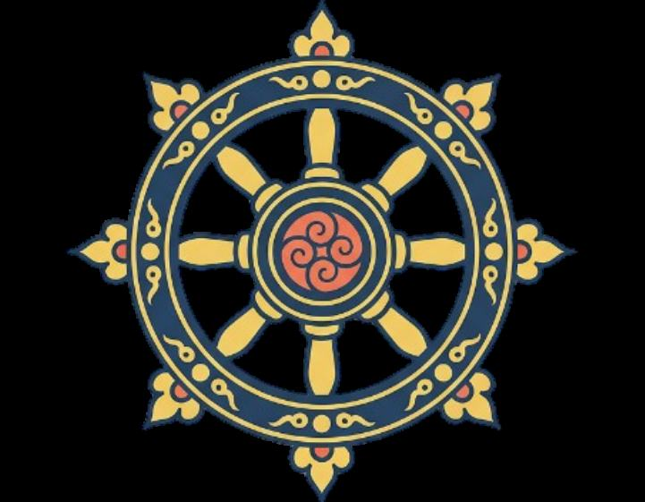
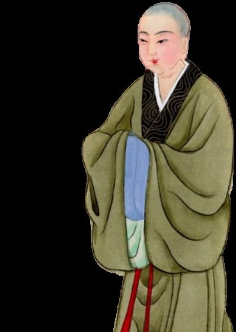

Путь
Дхармы
Учение Будды, жизнь монахов и устройство храма. Читайте, медитируйте и слушайте колокол.
Начать с основПопробовать медитацию
Буддизм
Буддизм - древнее учение, основанное Буддой Сиддхартхой Гаутамой, которое учит человека понимать природу страдания, освобождаться от привязанностей и заблуждений, развивать мудрость, сострадание и чистоту ума, следуя Дхарме, нравственным правилам и пути внутреннего пробуждения.

Монахи
Буддийские монахи - это люди, посвятившие свою жизнь следованию Дхарме, духовной практике и служению общине. Они отказываются от мирских привязанностей, соблюдают монашеские обеты, изучают учение Будды, занимаются медитацией и стремятся к мудрости, внутреннему спокойствию и освобождению от страданий.
Практика
Три простых упражнения. Выберите одно и уделите ему пару минут.
Вдох на 4 счёта, пауза на 2, выдох на 6. Следуйте за кругом.
Нажимайте на круг: каждое касание отмечает одну бусину из 108.
Ударьте в колокол и слушайте, пока звук не растворится.
Мир приходит изнутри. Не ищи его снаружи.Будда Шьякмуни
Основы
Восемь тем, с которых начинается понимание учения.
Четыре благородные истины
Четыре благородные истины - это основа учения Будды о природе человеческой жизни, страдания и освобождения.
Благородный восьмеричный путь
Благородный восьмеричный путь - это путь, указанный Буддой для освобождения от страдания и достижения пробуждения.
Карма и Перерождение
Карма - это закон причин и последствий, которому подчинены все живые существа.
Нирвана
Нирвана - это высшее освобождение, к которому стремится человек, следующий учению Будды.
Три драгоценности
Три драгоценности - это Будда, Дхарма и Сангха.
Пять обетов
Пять обетов - это основные нравственные правила, которыми руководствуется человек, следующий учению Будды.
Три яда
Три яда - это три главных состояния ума, которые мешают человеку видеть мир таким, каков он есть, и удерживают его в страдании.
Три признака существования
Три признака существования - это три свойства, которые, согласно учению Будды, присущи всему обусловленному существованию.
Ритм храма
Три события, которые повторяются в жизни Сангхи.
Паломничество
В часы наибольшей активности монахи покидают стены храма и отправляются в путь.
Каждую субботуЧитка сутр
Двери храма открываются для тех, кто желает услышать слова Дхармы.
Каждые две неделиХрам-рынок
Сангха открывает ворота храма для торговцев, ремесленников и всех, кто хочет приобрести или продать товары в безопасном месте.
Деятельность храма
Как живёт община: правила, практика и роли храма в жизни людей.
Устав храма
Каждый монах, вступающий в Сангху, принимает не только путь Дхармы, но и правила общины.
Буддийские имена
Вступая в Сангху, человек оставляет позади часть своей прежней жизни.
Читка сутр
Каждую субботу двери храма открываются для тех, кто желает услышать слова Дхармы.
Обеты
Обет для монаха - это не просто запрет или правило.
Паломничество
Паломничество - одна из важнейших частей жизни нашего храма.
Ритуальные обряды
Храм является местом, где человек может проводить самые важные события своей жизни.
Долг монаха
Монах может быть слабее воина, беднее торговца и не иметь власти над землями, но у него есть долг перед живыми.
Мудрость монаха
Монах не обязан проводить всю свою жизнь только за стенами храма.
Храм-убежище
Двери храма открыты для каждого, кто ищет убежища.
Храм-посредник
Храм является нейтральной территорией, открытой для людей любых сословий, кланов и организаций.
Храм-свидетель
Храм может выступать нейтральным свидетелем важных событий и действий.
Храм-судья
Не каждый спор должен заканчиваться враждой или боем.
Храм-рынок
Храм является местом мира и спокойствия, но его территория может служить не только для молитв и духовной практики.